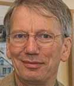

Members > Academic Committee

Peter Buneman
Fellow of the Royal Society of Edinburgh
Fellow of the ACM
Professor of University of Edinburgh
Fellow of the ACM
Professor of University of Edinburgh
Susan Davidson
Fellow of the ACM
Professor of University of Pennsylvania
Professor of University of Pennsylvania

Georg Gottlob
Fellow of the Royal Society
Fellow of the ACM
Professor of Oxford University
Fellow of the ACM
Professor of Oxford University